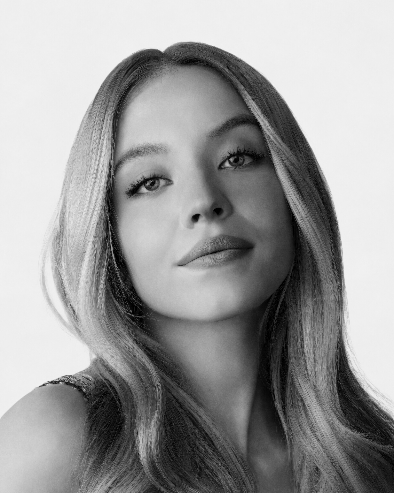

Sydney Bernice Sweeney američka je glumica. Glavnu pozornost privukla je Netflixovom
serijom Everything Sucks! (2018.) za ulogu Emaline i glumila je Eden u Huluovoj seriji
The Handmaid's Tale (2018.) i Alice u HBO-ovoj miniseriji Sharp Objects (2018.). Od 2019.
glumila je Cassie Howard u HBO-ovoj tinejdžerskoj dramskoj seriji Euphoria i Oliviju Mossbacher
u Bijelom lotosu. Na filmu je imala ulogu u komediji-drami Quentina Tarantina iz 2019. Bilo jednom
u Hollywoodu, tumačeći Zmiju, članicu obitelji Manson.